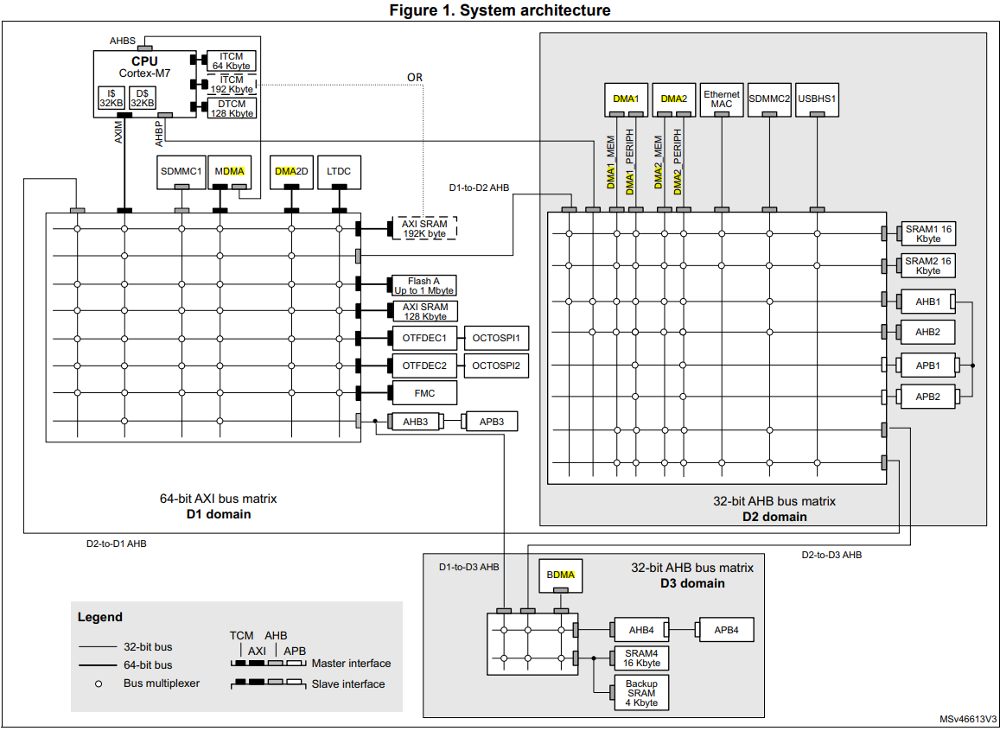
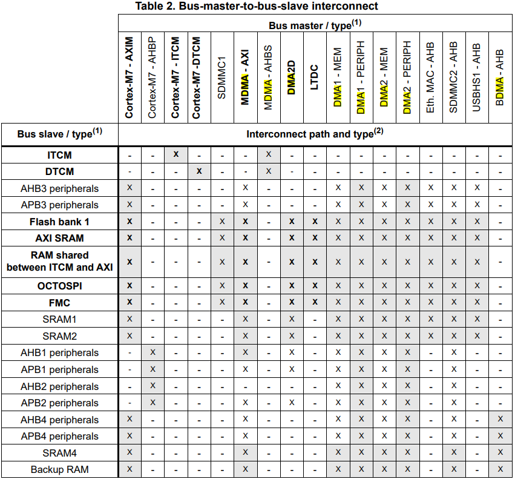
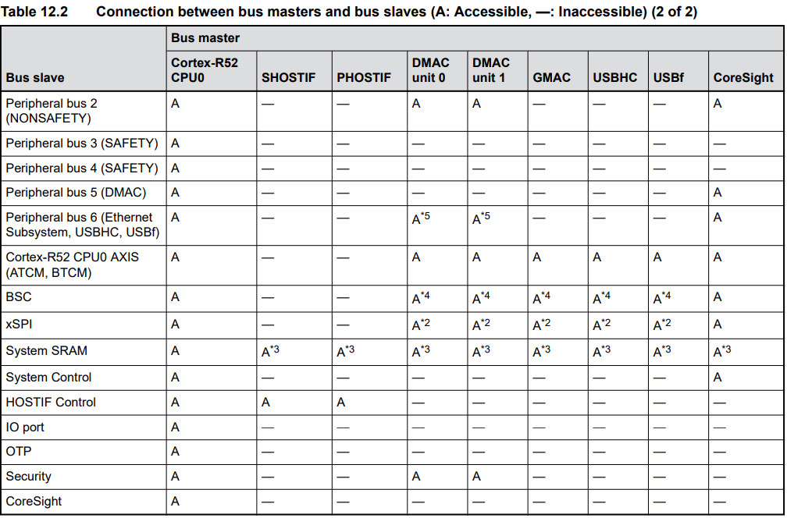
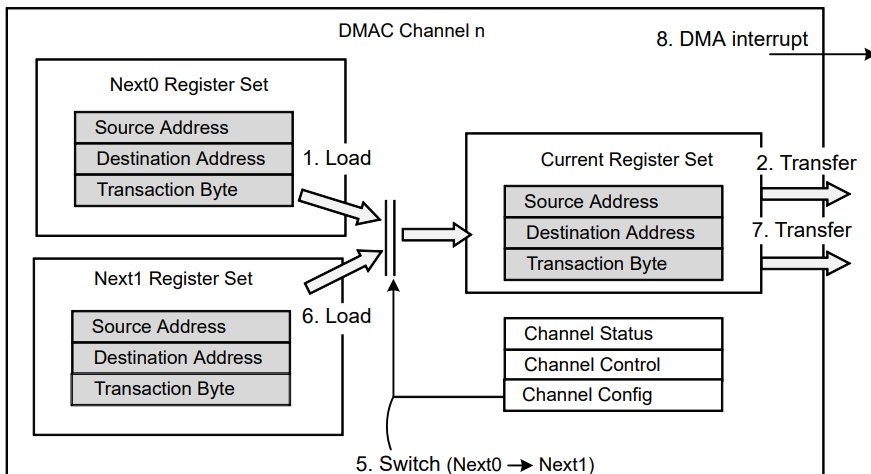
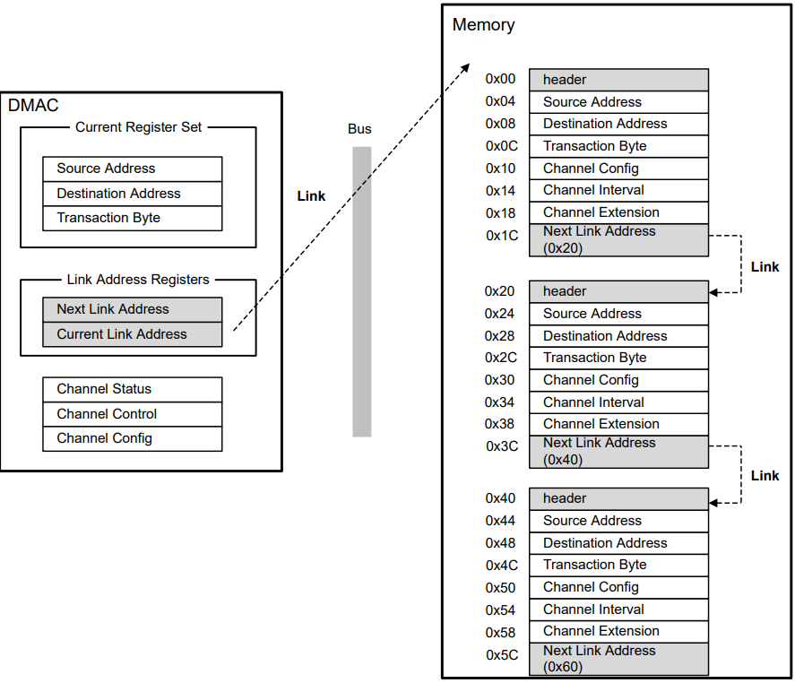

| 对比项 | RZN2L DMA | STM32H7 DMA | 备注 |
|---|---|---|---|
| 架构 | 双DMAC单元（DMAC0和DMAC1），共16通道 | 双DMA控制器（DMA1和DMA2），每个控制器8个流（Stream） | RZN2L的DMAC为独立单元，STM32H7通过流（Stream）和DMAMUX管理多通道请求。 |
| 通道/流数量 | 每DMAC 8通道，共16通道 | 每DMA控制器8个流，共16流，每个流支持115个通道请求（通过DMAMUX） | STM32H7通过DMAMUX灵活映射外设请求到流，通道扩展性更强。 |
| 数据 传输模式 |
支持单次传输（Per-request）、块传输（Block）、寄存器模式（Register）、链接模式（Link） | 支持常规模式（内存↔外设）、双缓冲模式（Double Buffer）、内存↔内存、FIFO模式 | RZN2L的链接模式支持描述符链式传输；STM32H7双缓冲适合连续数据流处理。 |
| 数据宽度 | 8/16/32/64/128/256/512位 | 8/16/32位 | RZN2L支持更宽的数据宽度（如512位），适合高带宽场景。 |
| 最大 传输大小 |
单次传输最大为3字节（2^32-1） | 每个传输项支持1~65535次传输（DMA流控制器） | RZN2L支持更大规模的连续数据传输。 |
| 触发方式 | 外部请求（DRECQ）、外设请求、软件请求 | 硬件触发（外设请求）、软件触发、DMAMUX事件触发 | STM32H7的DMAMUX支持事件触发，灵活性更高。 |
| 对比项 | RZN2L DMA | STM32H7 DMA | 备注 |
|---|---|---|---|
| 优先级控制 | 固定优先级或循环调度（Round-Robin） | 4级软件可编程优先级（非常髙/高/中/低）或硬件默认优先级 | RZN2L支持动态调度，STM32H7优先级更细分。 |
| 地址增量 | 支持源/目标地址独立增量 | 支持源/目标地址独立增量，且支持突发传输（4/8/16拍） | STM32H7突发传输优化总线利用率。 |
| 中断类型 | 传输完成、传输错误（每DMAC单元独立） | 传输完成、半传输、传输错误、FIFO错误、直接模式错误 | STM32H7中断类型更细分，支持实时监控多种状态。 |
| FIFO功能 | 无明确FIFO描述，但支持缓冲区刷新（Buffer Flush） | 4级深度FIFO，支持阈值配置（1/4、1/2、3/4）或直接模式 | STM32H7的FIFO优化了数据传输连续性。 |
| 双缓冲 /循环模式 |
支持双缓冲（Double Buffer） | 支持双缓冲和循环缓冲（Circular Buffer） | 两者均适合连续数据流处理。 |
| 错误处理 | 传输错误中断，支持自动暂停和缓冲区刷新 | 传输错误、FIFO错误、直接模式错误检测 | RZN2L支持暂停和刷新，STM32H7错误检测更全面。 |
| 特殊功能 | 链表模式（Link Mode）、传输间隔调整（Interval Function） | DMAMUX请求多路复用器（支持115个外设请求映射）、突发传输 | RZN2L的链表模式支持复杂传输链；STM32H7的DMAMUX扩展了外设兼容性。 |
| 适用场景 | 工业通信（以太网、CAN-FD）、高速数据采集 | 实时控制（电机驱动）、多通道传感器采集、音频流处理 | RZN2L侧重高带宽工业协议；STM32H7侧重灵活外设管理和实时控制。 |





| 对比项 | 无DMA的传统传输 | DMA传输 | 对比结果 |
|---|---|---|---|
| 总线占用方式 | CPU与外设共享总线，需频繁仲裁 | DMA通过专用总线独立操作，与CPU并行 | DMA减少总线竞争，提升带宽利用率 |
| 传输控制 | CPU逐字节操作，指令周期占用总线 | DMA硬件控制器管理传输，突发模式批量搬运数据 | 突发传输优化总线占用周期 |
| 吞吐量峰值 | 受限于CPU指令效率（如32位MCU约50MB/s） | 依赖总线宽度（如64位AXI总线可达3.2GB/s） | DMA吞吐量提升10倍以上 |
| 典型场景 | 小数据量传输（如GPIO控制） | 高速数据流（如千兆以太网、摄像头采集） | DMA适合高带宽需求场景 |
| 对比项 | 无DMA的传统传输 | DMA传输 | 对比结果 |
|---|---|---|---|
| CPU占用率 | 高（需执行LOAD/STORE指令，占用80%+算力） | 低（仅初始化参数，占用<5%算力） | CPU算力释放给核心算法（如AI推理、控制逻辑） |
| 任务并行性 | CPU阻塞在数据搬运中，无法处理其他任务 | CPU与DMA并行工作，实现多任务流水线 | 系统整体效率显著提升 |
| 实时性保障 | 高负载下响应延迟不可控 | 确定性传输保障硬实时任务（如PWM波形更新） | 关键任务（电机控制）延迟降低至微秒级 |
| 代码复杂度 | 需手动编写数据搬运逻辑，代码冗余 | 硬件自动处理，代码简洁易维护 | 开发效率提升，减少潜在错误 |
| 对比项 | 无DMA的传统传输 | DMA传输 | 对比结果 |
|---|---|---|---|
| 中断频率 | 每个数据项触发一次中断（如1KB数据需1024次中断） | 整块传输完成触发一次中断 | 中断频率降低99.9% |
| 上下文切换开销 | 高频中断导致大量寄存器保存/恢复操作 | 极低的中断次数减少上下文切换 | CPU有效算力提升20%-30% |
| 实时任务影响 | 中断延迟可能阻塞高优先级任务 | 确定性中断触发，优先级可配置 | 硬实时任务（如ADC采样）抖动小于1μs |
| 功耗优化 | 频繁中断唤醒CPU，增加动态功耗 | CPU可进入低功耗模式，仅响应最终完成中断 | 系统待机功耗降低50%+ |
| 对比项 | 无DMA的传统传输 | DMA传输 | 对比结果 |
|---|---|---|---|
| 传输粒度 | 单字节/单字传输，效率低下 | 支持突发传输（4/8/16拍）或整块传输（如1KB） | 有效带宽利用率提升至90%+ |
| 数据一致性 | 逐项处理易因中断导致数据错位 | 硬件保证数据块原子性传输 | 避免数据丢失或错位（如SD卡写入） |
| 复杂数据流支持 | 需软件手动管理非连续数据 | 支持描述符链表（如RZN2L）自动跳转传输 | 协议栈分包处理效率提升3倍+ |
| 典型优化场景 | 小文件读写 | 大文件传输、音视频流、网络协议栈 | DMA使能后，FPS（帧率）稳定性提升40% |